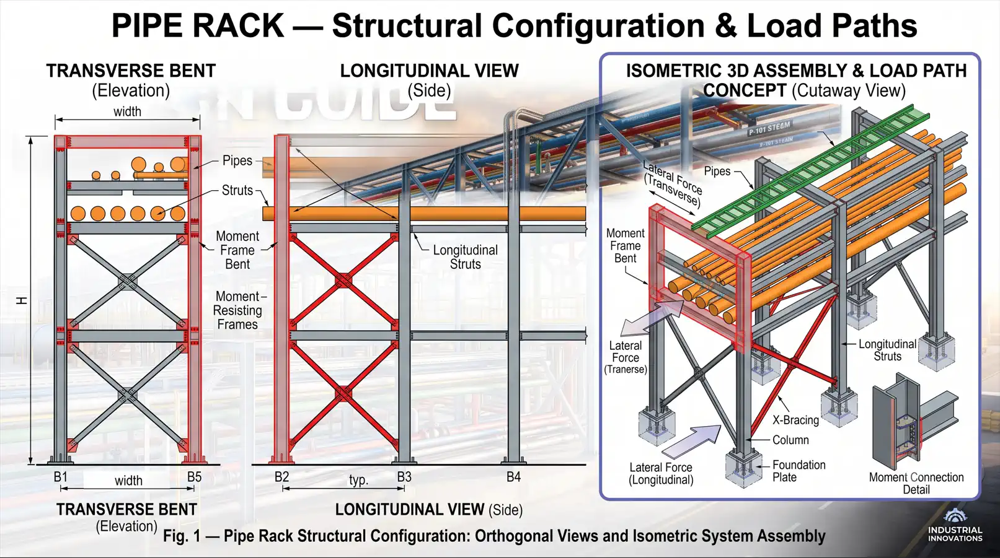
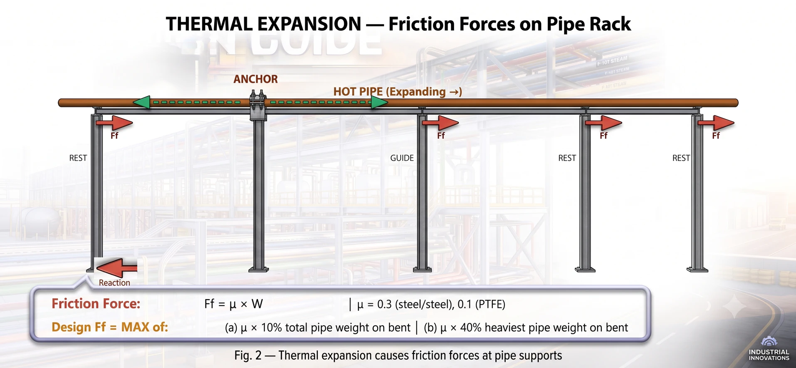
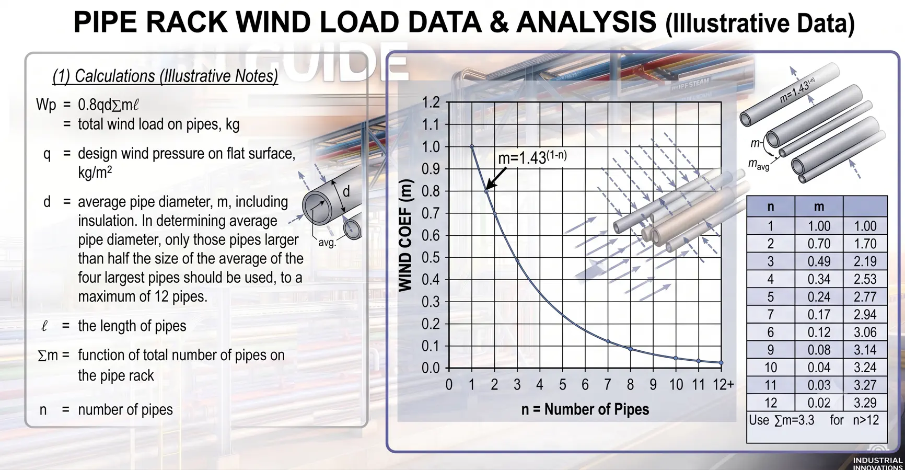
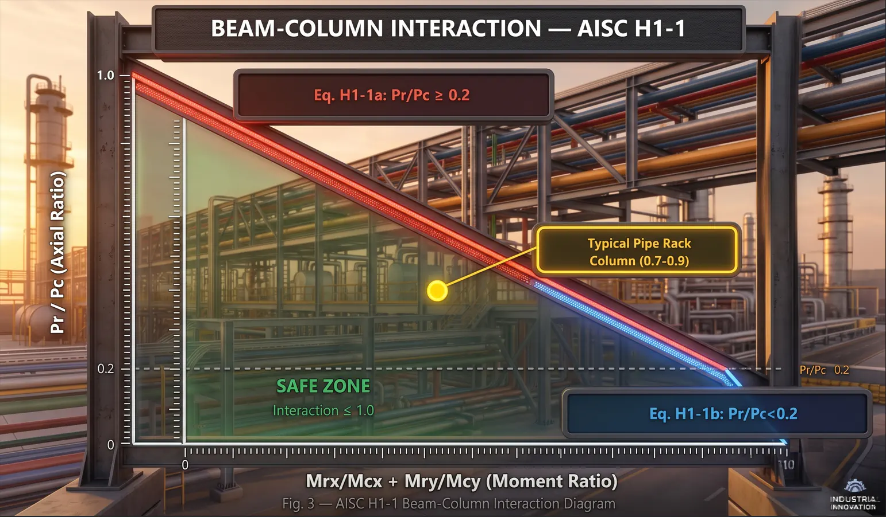

1. Tổng quan — Pipe Rack có gì đặc biệt?
- Pipe rack là hệ khung thép đỡ đường ống công nghệ, máng cáp điện, máng thiết bị đo lường trong nhà máy (dầu khí, hoá dầu, nhiệt điện).
- Không phải nhà — là non-building structure với đặc điểm tải trọng riêng biệt.
- Tải nhiệt/ma sát từ giãn nở ống — thường là tải ngang chi phối thiết kế.
- Tải trọng biến thiên lớn — ống rỗng, ống đầy dung dịch, hoặc thử thuỷ lực.
- Phối hợp đa ngành — kết cấu, đường ống, điện, đo lường cần thống nhất.
- Thi công lắp ghép — liên kết bu-lông được ưu tiên, hạn chế hàn ngoài công trường.
- Dự phòng mở rộng — cân nhắc thiết kế dư 10–25% tải trọng cho tương lai.
2. Cấu hình kết cấu

2.1. Phương ngang — Khung moment
- Mỗi Moment Frame là khung cứng gồm 2 cột + 1 hoặc nhiều dầm.
- Chịu tải ngang vuông góc với hướng ống (gió, động đất).
- Chân cột: thường ngàm hoặc khớp phụ thuộc vào thiết kế.
- Liên kết dầm–cột: cứng (chịu moment).
- Phải giữ thông thoáng bên dưới cho xe cộ, bảo trì, thiết bị.
2.2. Phương dọc — Khung giằng
- Giằng đứng (X-bracing hoặc V-ngược) đặt cách quãng dọc pipe rack.
- Chân cột: thường là khớp.
- Thanh giằng ngang (strut) nối các bent ở mức dầm → truyền lực ngang đến bay giằng.
- Chịu: lực ma sát, gió, động đất song song hướng ống.
3. Tải trọng — bước quan trọng nhất
3.1. Tĩnh tải (D)
- Trọng lượng ống: ống rỗng + bọc cách nhiệt.
- Trọng lượng máng cáp: máng + cáp (thường 20–150 kg/m mỗi máng).
- Tải trọng bản thân: thép kết cấu, lớp chống cháy.
- Tải dự trữ khi chưa có dữ liệu ống chi tiết: mức ống 10–15 kPa mỗi mức; mức máng cáp 2.5–5 kPa.
3.2. Hoạt tải (L)
- Sàn thao tác: 2.5–5.0 kPa.
- Tải thi công/lắp dựng: theo yêu cầu dự án.
3.3. Tải vận hành (Do)
Tĩnh tải + trọng lượng dung dịch trong điều kiện vận hành bình thường. Đây là tải trọng đứng chính cho hầu hết kiểm tra thiết kế.
3.4. Tải thử thuỷ lực (Dt)
- Tĩnh tải + trọng lượng nước thử (nước nặng hơn hầu hết dung dịch công nghệ).
- Áp dụng từng ống một — không phải tất cả ống cùng lúc.
- Có thể là tải trọng đứng chi phối cho ống đường kính lớn.
3.5. Tải nhiệt / ma sát (Ff)

Đây là tải trọng đặc trưng của pipe rack — không có trong nhà dân dụng.
- Nguyên nhân: ống giãn/co theo nhiệt độ → trượt trên gối đỡ → lực ma sát.
- Phương: chủ yếu dọc theo hướng ống.
- Hệ số ma sát (μ): thép–thép ≈ 0.3; thép–PTFE ≈ 0.05–0.10.
Ff = MAX của:
(a) μ × 10% tổng trọng lượng ống trên bent
(b) μ × 40% trọng lượng ống lớn nhất trên bent- Tải neo (Anchor): tại điểm neo, toàn bộ lực giãn nở truyền trực tiếp — có thể rất lớn (hàng trăm kN).
- Tải dẫn hướng (Guide): lực ngang tại vị trí dẫn hướng — ống di chuyển dọc trục nhưng bị giữ ngang.
3.6. Tải gió (W)
- Tính theo ASCE 7 (hoặc tiêu chuẩn địa phương).
- Áp dụng lên: diện tích đón gió của cột, dầm, ống, máng cáp, bọc cách nhiệt.
- Diện tích ống: dùng đường kính toàn bộ (bao gồm cách nhiệt).
- Hiệu ứng che chắn: một số tiêu chuẩn cho phép giảm khi có nhiều hàng ống.
- Gió trên pipe rack thường theo phương ngang (vuông góc hướng ống).

3.7. Tải động đất (E)
- Theo ASCE 7 và thông số động đất dự án.
- Pipe rack là non-building structure → dùng R-factor và hệ số tầm quan trọng riêng.
- Giá trị điển hình tham khảo: R = 3.5–8.0 cho khung moment (phương ngang); R = 8 cho khung giằng thường (phương dọc).
- Trọng lượng động đất: trọng lượng kết cấu + trọng lượng ống vận hành.
3.8. Bảng tóm tắt tải trọng
| Tải trọng | Ký hiệu | Phương | Ghi chú |
|---|---|---|---|
| Tĩnh tải | D | Đứng ↓ | Kết cấu + ống rỗng + cách nhiệt |
| Vận hành | Do | Đứng ↓ | D + dung dịch |
| Thử thuỷ lực | Dt | Đứng ↓ | D + nước thử (từng ống) |
| Hoạt tải | L | Đứng ↓ | Sàn thao tác |
| Ma sát | Ff | Dọc ← → | Giãn nở nhiệt ống |
| Tải neo | Fa | Dọc / Ngang | Phân tích ứng suất ống |
| Gió | W | Ngang / Dọc | ASCE 7, diện tích đón gió |
| Động đất | E | Cả 2 phương | ASCE 7, khối lượng vận hành |
4. Tổ hợp tải trọng — AISC 360 / ASCE 7
4.1. Tổ hợp LRFD (chính)
1) 1.4D
2) 1.2D + 1.6L
3) 1.2Do + 1.0L + 1.6W
4) 1.2Do + 1.0E
5) 0.9D + 1.6W (kiểm tra nhổ/lật)
6) 0.9D + 1.0E (kiểm tra nhổ/lật)
7) 1.2D + 1.6Ff (ma sát là tải ngang chính)
8) 1.2Dt (thử thuỷ lực — trường hợp đặc biệt)4.2. Lưu ý quan trọng
- Ma sát (Ff) là tải ngang riêng biệt — không tổ hợp đồng thời với gió hoặc động đất.
- Tải thử (Dt) là điều kiện đặc biệt — chỉ tổ hợp với tĩnh tải.
- Luôn kiểm tra cả nhổ (0.9D + W hoặc E) và tải trọng đứng lớn nhất.
- Dùng tải danh nghĩa (notional loads) nếu sử dụng Direct Analysis Method.
5. Phương pháp phân tích
5.1. Phân tích tách biệt (khuyến nghị cho rack tiêu chuẩn)
Hầu hết pipe rack có thể phân tích hiệu quả bằng cách tách hai phương vuông góc:
- ① Khung ngang (2D Frame): mô hình khung moment 2 cột + dầm; tải trọng lực + gió/động đất ngang; kết quả là kích thước cột, dầm, tỷ số tương tác.
- ② Khung giằng dọc (2D Truss): mô hình khung giằng với strut + giằng + cột đại diện; tải ma sát + gió/động đất dọc; kết quả là kích thước giằng, strut, kiểm tra cột phương dọc.
- ③ Kết hợp kết quả: tỷ số cột chi phối = MAX (kiểm tra ngang, kiểm tra dọc, tương tác hai trục).
5.2. Phân tích 3D đầy đủ (cho rack phức tạp)
- Hình học không đều (chiều cao thay đổi, offset).
- Thiết bị nặng đặt trên rack.
- Tải neo lớn từ phân tích ứng suất ống.
- Thiết kế động đất yêu cầu phân tích modal.
5.3. Hiệu ứng bậc hai (P-Δ)
- AISC 360 yêu cầu xét hiệu ứng bậc hai.
- Direct Analysis Method (DAM): ưu tiên — áp dụng tải danh nghĩa, giảm độ cứng, K = 1.0.
- Effective Length Method (ELM): tính K-factor cho sway frame.
- Pipe rack chiều cao vừa phải: hệ số khuếch đại B₂ thường 1.05–1.15.
6. Thiết kế dầm
6.1. Tải trọng trên dầm
- Dầm đỡ ống tại các điểm rời rạc — không phải tải phân bố đều.
- Mỗi gối đỡ ống = tải tập trung trên dầm.
- Máng cáp: xử lý như tải phân bố đều (UDL).
- Trọng lượng bản thân dầm: kể như tải phân bố đều.
6.2. Các kiểm tra thiết kế
| Kiểm tra | Công thức / tham chiếu | Ghi chú |
|---|---|---|
| Uốn | Mn = Mp = Fy × Zx (compact) | AISC 360 Chương F |
| Cắt | Vn = 0.6Fy × Aw × Cv | AISC 360 Chương G |
| Võng | δ ≤ L/240 (TT+HT) hoặc L/360 (HT) | Khả năng sử dụng |
| Mất ổn định xoắn ngang (LTB) | Kiểm tra Lb so với Lp, Lr | Chiều dài không giằng quan trọng |
| Oằn cục bộ bụng | Giới hạn h/tw | Ưu tiên tiết diện compact |
6.3. Chiều dài không giằng (Lb)
- Cánh trên chịu nén: Lb = khoảng cách giữa các điểm giằng ngang.
- Cánh dưới chịu nén (moment âm tại liên kết): Lb = toàn bộ nhịp dầm trừ khi có giằng riêng.
7. Thiết kế cột — tương tác dầm–cột
Đây là kiểm tra thiết kế quan trọng nhất trong pipe rack.
7.1. Thiết kế cột thép
- Nén dọc trục (trọng lực từ các mức).
- Uốn trục mạnh (tải ngang — khung moment).
- Uốn trục yếu (ma sát/gió dọc — nếu không giằng).
- → Phải thoả mãn phương trình tương tác AISC 360 Chương H.
7.2. Phương trình tương tác AISC H1-1

Khi Pr/Pc ≥ 0.2:
Pr/Pc + (8/9)(Mrx/Mcx + Mry/Mcy) ≤ 1.0 — Eq. H1-1a
Khi Pr/Pc < 0.2:
Pr/(2Pc) + (Mrx/Mcx + Mry/Mcy) ≤ 1.0 — Eq. H1-1b| Ký hiệu | Ý nghĩa |
|---|---|
| Pr | Lực dọc yêu cầu (đã nhân hệ số) |
| Pc | Khả năng chịu nén cho phép (φPn) |
| Mrx, Mry | Moment yêu cầu (trục mạnh, trục yếu) |
| Mcx, Mcy | Khả năng chịu uốn cho phép (φMn) |
7.3. Chiều dài không giằng cột
| Phương | Trục mạnh | Trục yếu |
|---|---|---|
| Ngang | Chân cột đến dầm (khung moment) | Chân cột đến strut/dầm đầu tiên |
| Dọc | Chân cột đến dầm | Chân cột đến strut/dầm đầu tiên |
| K (DAM) | K = 1.0 | K = 1.0 |
| K (ELM, lắc) | K > 1.0 (abacus) | K > 1.0 (nếu không giằng) |
7.4. Quy trình thiết kế cột từng bước
- 1. Xác định tải: Pr, Mrx, Mry (bao gồm hiệu ứng bậc hai).
- 2. Chọn tiết diện thử: H-shape, trục khoẻ theo phương ngang.
- 3. Tính Pc: dựa trên KLx/rx và KLy/ry — dùng Pn nhỏ hơn.
- 4. Tính Mcx: dựa trên Lb (chiều dài không giằng cho LTB).
- 5. Tính Mcy: khả năng uốn trục yếu.
- 6. Kiểm tra H1-1a hoặc H1-1b: tỷ số tương tác ≤ 1.0.
- 7. Lặp lại nếu tỷ số > 1.0 hoặc < 0.6 (tối ưu).
Tóm tắt Part 1
| # | Nội dung | Từ khoá |
|---|---|---|
| 1 | Pipe rack = non-building, tải ngang thường chi phối | Non-Building |
| 2 | Ngang = khung moment, Dọc = khung giằng | Two Systems |
| 3 | Ma sát nhiệt là tải trọng ĐẶC TRƯNG của pipe rack | Ff = μ × W |
| 4 | Ma sát và gió/động đất KHÔNG tổ hợp đồng thời | Exclusive Lateral |
| 5 | Gối ống có thể KHÔNG giằng dầm | Lb Caution |
| 6 | Cột = beam-column, kiểm tra AISC H1-1 | Interaction |
| 7 | Chiều dài không giằng trục yếu thường chi phối | Weak Axis KL/r |
Bài viết thuộc series “Hướng dẫn thiết kế kết cấu Công trình Công nghiệp” — Roberto Structural. Nội dung mang tính hướng dẫn kỹ thuật; kỹ sư chịu trách nhiệm kiểm tra và hiệu chỉnh theo điều kiện cụ thể của từng dự án và yêu cầu của tiêu chuẩn áp dụng.
Chia sẻ bài viết